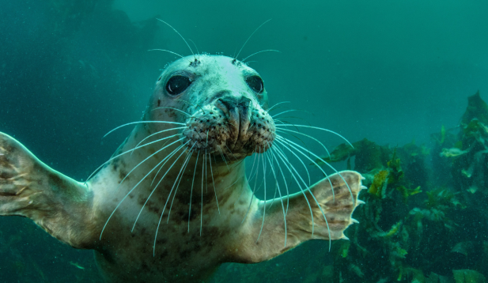
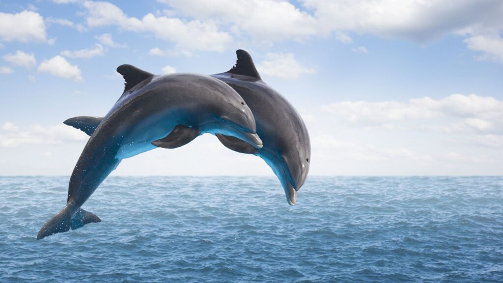
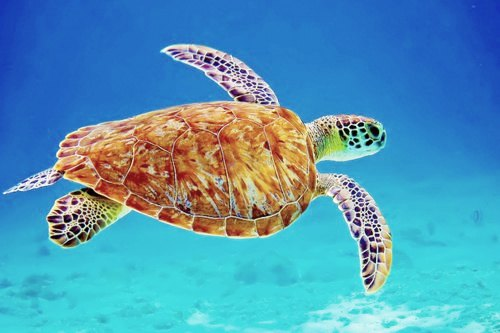
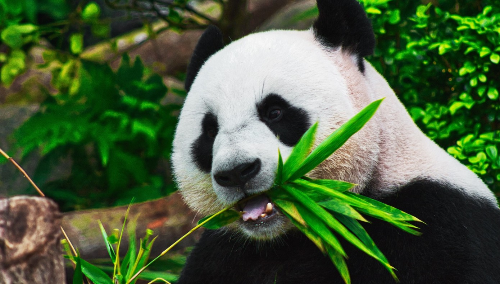

<!DOCTYPE html>
<html lang="en">
<head>
    <title>Ζώα</title>

</head>
</html>

<!DOCTYPE html>
<html lang="en">
<head>
  <title>zwa</title>
  <meta charset="utf-8">
  <meta name="viewport" content="width=device-width, initial-scale=1">
  <link href="https://cdn.jsdelivr.net/npm/bootstrap@5.3.1/dist/css/bootstrap.min.css" rel="stylesheet">
  <script src="https://cdn.jsdelivr.net/npm/bootstrap@5.3.1/dist/js/bootstrap.bundle.min.js"></script>
</head>
<body>

<div class="container mt-3">
</div>

</body>
</html>


<!-- Carousel -->
<div id="demo" class="carousel slide" data-bs-ride="carousel">

    <!-- Indicators/dots -->
    <div class="carousel-indicators">
      <button type="button" data-bs-target="#demo" data-bs-slide-to="0" class="active"></button>
      <button type="button" data-bs-target="#demo" data-bs-slide-to="1"></button>
      <button type="button" data-bs-target="#demo" data-bs-slide-to="2"></button>
      <button type="button" data-bs-target="#demo" data-bs-slide-to="3"></button>
    </div>
  
    <!-- The slideshow/carousel -->
    <div class="carousel-inner">
      <div class="carousel-item active">
      
      </div>
      <div class="carousel-item">
        
      </div>
      <div class="carousel-item">
        
      </div>
      <div class="carousel-item">
        
      </div>
      <div class="carousel-item">
        
      </div>
    </div>
    
  
    <!-- Left and right controls/icons -->
    <button class="carousel-control-prev" type="button" data-bs-target="#demo" data-bs-slide="prev">
      <span class="carousel-control-prev-icon"></span>
    </button>
    <button class="carousel-control-next" type="button" data-bs-target="#demo" data-bs-slide="next">
      <span class="carousel-control-next-icon"></span>
    </button>
  </div>

 
    <ul> 
        <h1><li> <p class="text-bg-primary">Φώκια </li></h1></p>
        <h3><li><p class="text-bg-success">Είναι το μόνο πτερυγιόποδο που ζει στην Ελλάδα. 
            Τα πτερυγιόποδα είναι πλήρως προσαρμοσμένα στη ζωή στη θάλασσα, αλλά, 
            σε αντίθεση με τα κητώδη, περνούν χρόνο και στην ξηρά, 
            ειδικά για να γεννήσουν και να γαλουχήσουν τα μικρά τους.</h3></li></p>
        
        <h1><li> <p class="text-bg-primary">Δελφίνι </li></h1>      
        <h3><li><p class="text-bg-success">O μεγαλύτερος «φυσικός εχθρός» των δελφινιών είναι δυστυχώς ο άνθρωπος. 
            Η τυχαία ή ηθελημένη θανάτωση σε δίχτυα, η πετρελαϊκή ρύπανση, 
            η μόλυνση από τη συσσώρευση τεχνητών χημικών ενώσεων στους ιστούς τους, η όχληση από σκάφη αναψυχής, 
            η κλιματική αλλαγή, η ηχορύπανση 
            (πχ από στρατιωτικές ασκήσεις και σεισμικές δραστηριότητες για εντοπισμό υδρογονανθράκων ή προπέλες σκαφών), 
            η συνολική υποβάθμιση του θαλάσσιου οικοσυστήματος και η μείωση της διαθέσιμης τροφής, 
            απειλούν όλα τα είδη δελφινιών και οδηγούν μακροπρόθεσμα στη μείωση των πληθυσμών τους στις ελληνικές θάλασσες.</h3></li></p>
        
        <h1><li><p class="text-bg-primary">Χελώνα</li></h1>  
        <h3><li><p class="text-bg-success">Η Ελλάδα φιλοξενεί το 60% περίπου των φωλιών της Μεσογείου, αλλά και δύο από τις πιο σημαντικές περιοχές ωοτοκίας: 
            το Εθνικό Θαλάσσιο Πάρκο Ζακύνθου με τις έξι παραλίες ωοτοκίας στον Κόλπο του Λαγανά στη Ζάκυνθο 
            και τον νότιο Κυπαρισσιακό κόλπο στη δυτική Πελοπόννησο. 
            Αν και κατάφερε να επιβιώσει για τόσα εκατομμύρια χρόνια, η χελώνα καρέτα βρίσκεται σήμερα αντιμέτωπη με την εξαφάνιση, 
            αν δεν δράσουμε άμεσα.</h3></li></ul></p>
            
        <h1><li> <p class="text-bg-primary">Πολική Αρκούδα </li></h1>    
        <h3><li><p class="text-bg-success">Την συναντάμε στον Αρκτικό Ωκεανό, σε μέρη του Καναδά, της Αλάσκας, της Ρωσίας, της Γροιλανδίας και της Νορβηγίας. 
            Για όσους δεν το γνωρίζουν, είναι το μεγαλύτερο χερσαίο σαρκοφάγο ζώο του πλανήτη, αλλά θεωρείται θαλάσσιο θηλαστικό, 
            καθώς περνά το μεγαλύτερο μέρος της ζωής της στον θαλάσσιο πάγο, προστατευμένη από την ισχυρή «πανοπλία λίπους» 
            και την αδιάβροχη γούνα της. Η ικανότητα να εντοπίσει την τροφή της είναι εντυπωσιακή. 
            Η εξαιρετική όσφρησή της την βοηθάει να ανιχνεύει το θήραμά της ακόμα και ένα χιλιόμετρο μακριά. 
            Μια πολική αρκούδα περνά σχεδόν τη μισή ζωή της κυνηγώντας. 
            Μέσα στο νερό νιώθει σαν στο σπίτι της, αφού κολυμπάει «επαγγελματικά» με ταχύτητες που αγγίζουν τα περίπου 10 χιλιόμετρα την ώρα.
            Κι όμως, το πραγματικό της σπίτι είναι ο πάγος και… 
            οι πάγοι λιώνουν</h3></li></p>

        <h1><li><p class="text-bg-primary">Πάντα</li></h1>
        <h3><li><p class="text-bg-success">Δυστυχώς, η διάνοιξη δρόμων, η αποψίλωση των δασών για ξυλεία ή για καλλιέργειες, η κλιματική κρίση αλλά 
            και η άναρχη ανάπτυξη του τουρισμού περιορίζουν και κατακερματίζουν τον βιότοπό του, απειλώντας το με εξαφάνιση. 
            Οι προσπάθειες έχουν αποδώσει ήδη καρπούς. 
            Σε σχέση με τις αρχές της δεκαετίας του 1980 που το WWF ξεκίνησε το πρόγραμμα προστασίας τους στην Κίνα, 
            υπάρχουν 40% περισσότερα Γιγάντια πάντα, ενώ το 2016, 
            η Διεθνής Ένωση Προστασίας της Φύσης (IUCN) ανακοίνωσε ότι το μοναδικό αυτό είδος έχει αναβαθμιστεί από "απειλούμενο" σε "τρωτό" 
            στον παγκόσμιο κατάλογο ειδών που κινδυνεύουν να εξαφανιστούν, μετά από αύξηση πληθυσμού σχεδόν 17% σε μια δεκαετία. 
            Ο κίνδυνος βέβαια παραμένει αλλά η ικανοποίηση για όσα έχουμε καταφέρει μαζί είναι μεγάλη και μας δίνει δύναμη να συνεχίσουμε.</h3></li></p>    

    </ul>


  <div class="dropdown">
    <button type="button" class="btn btn-primary dropdown-toggle" data-bs-toggle="dropdown">
      Οργανώσεις
    </button>
    <ul class="dropdown-menu">
      <li><a class="dropdown-item" href="#">PETA</a></li>
      <li><a class="dropdown-item" href="#">WWF</a></li>
      <li><a class="dropdown-item" href="#">GREENPEACE</a></li>
      <li><a class="dropdown-item" href="#">ΑΡΚΤΟΥΡΟΣ</a></li>
      <li><a class="dropdown-item" href="#">ΔΕΛΦΙΣ</a></li>

    </ul>
  </div>
